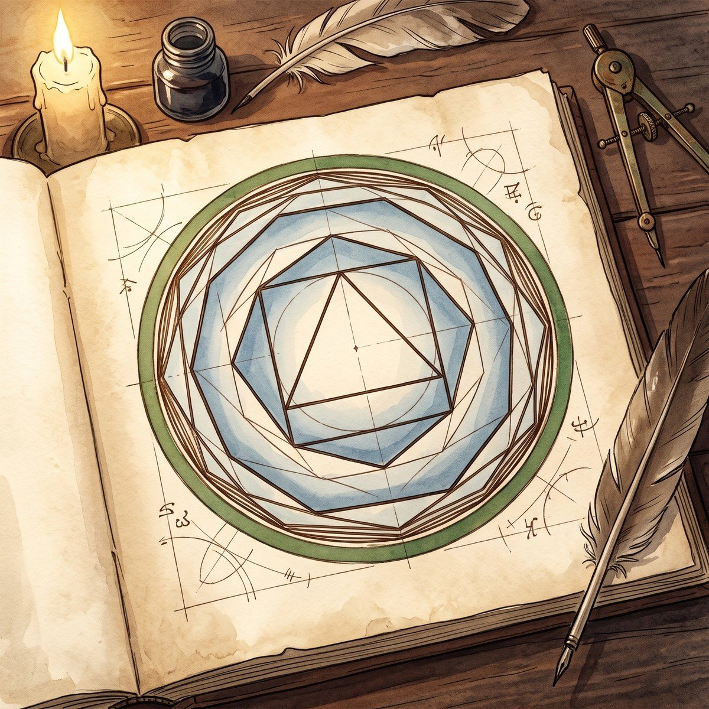
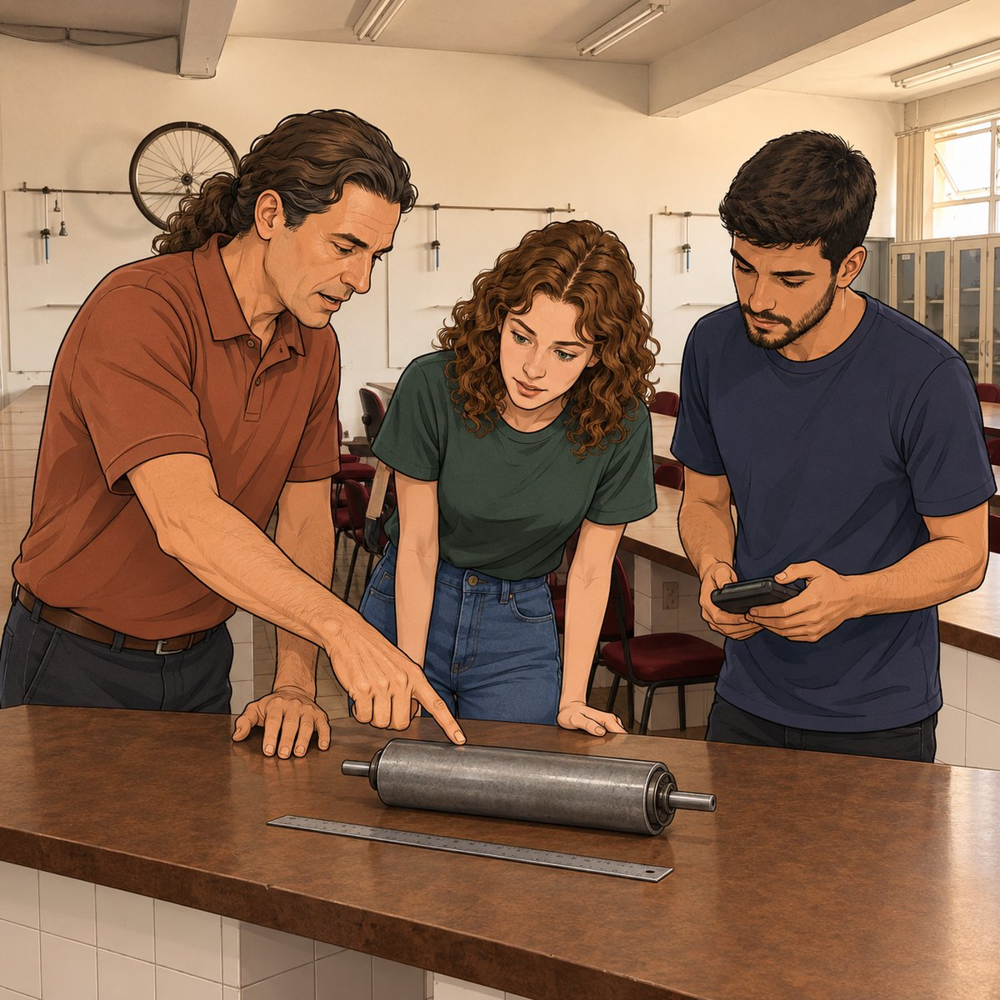
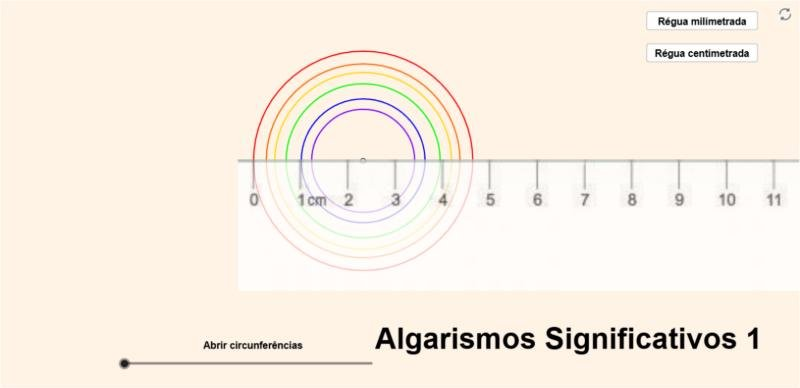
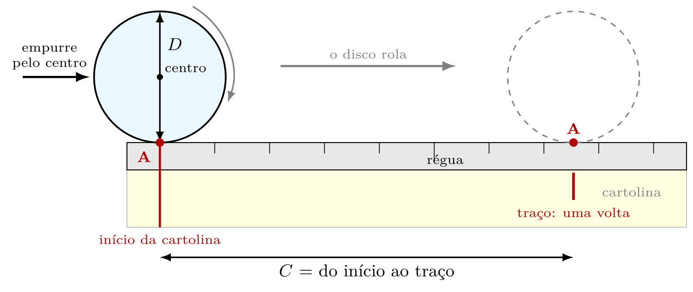
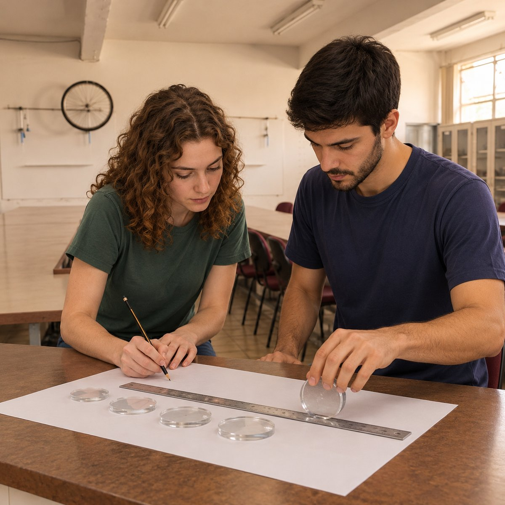
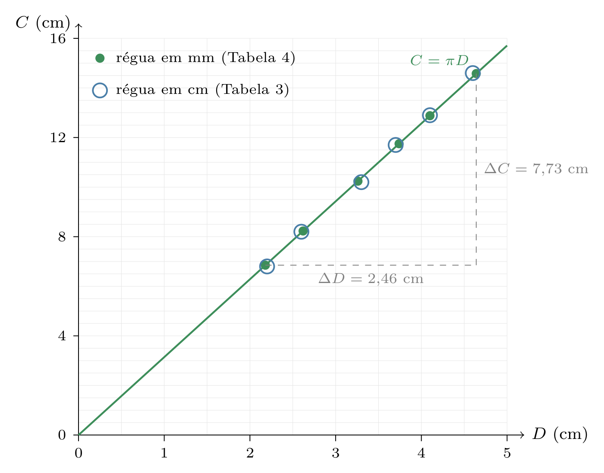
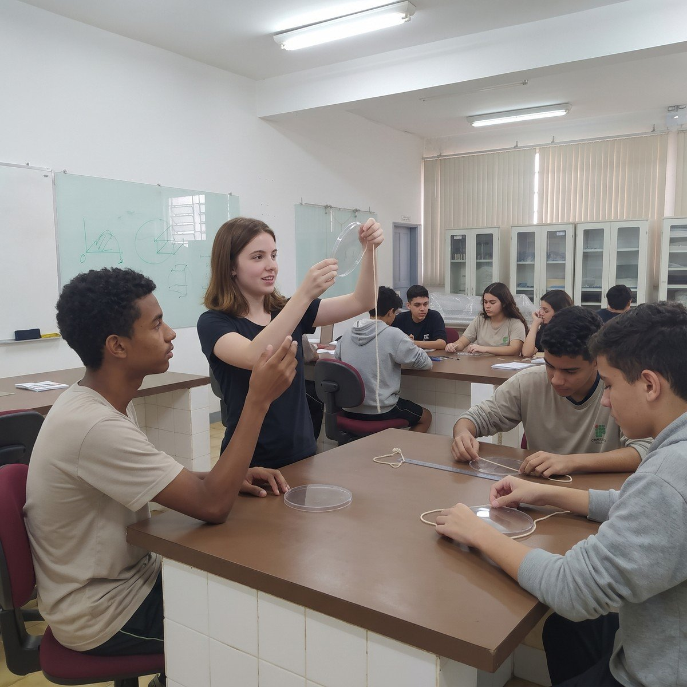
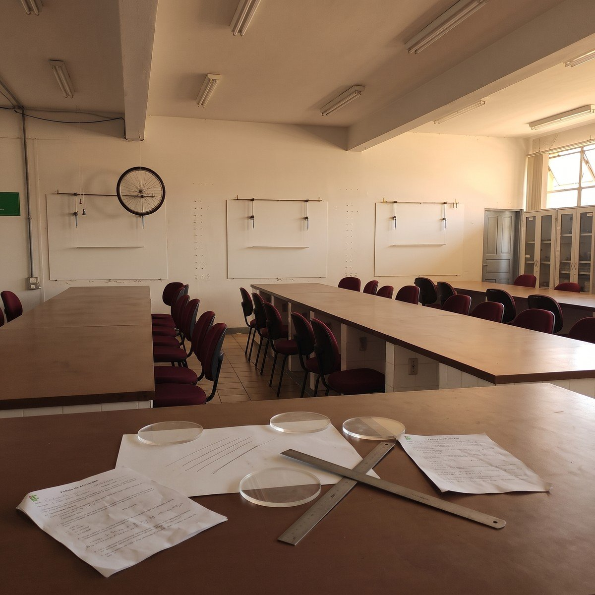
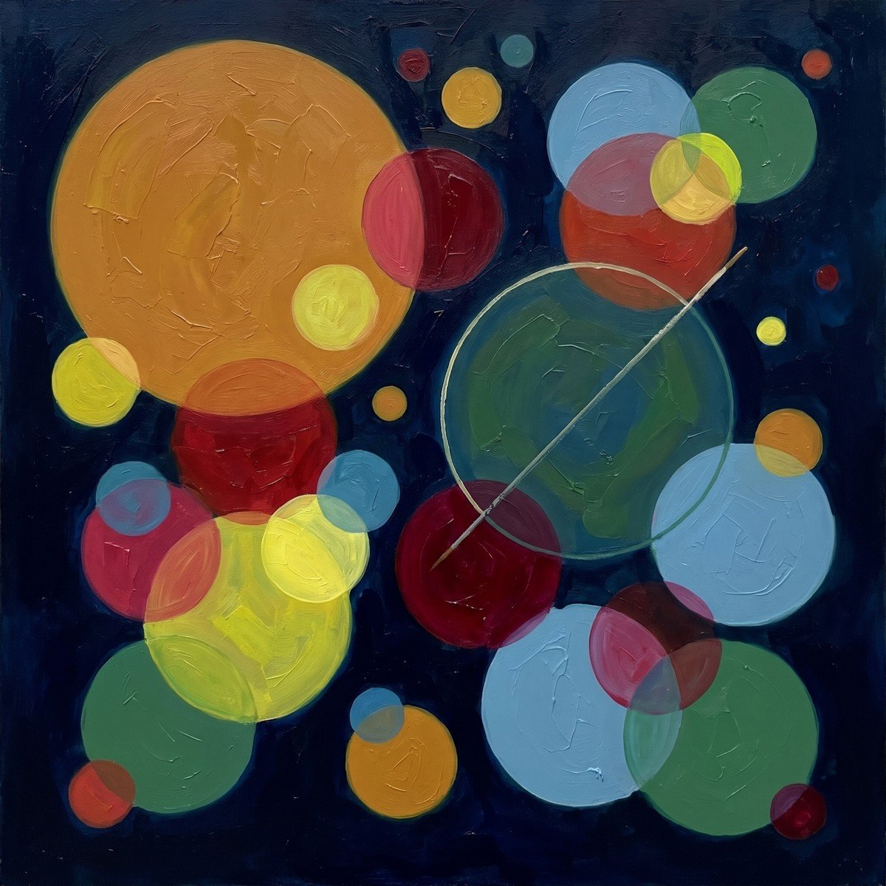

IFMG campus Ouro Preto - Coordenadoria da Área de Física - Núcleo de Inovação e Desenvolvimento de Experimentos Científicos (NIDEC) · LME · T0E · Primeira edição · 2026
▼ role para ler
♪ Leia ouvindo — clique aqui ou na aba MÚSICA e conheça a recomendação de Piazzi.
O intelecto, que não é a verdade, nunca compreende a verdade com tanta precisão que ela não possa ser compreendida com precisão infinitamente maior. Pois o intelecto está para a verdade como o polígono inscrito está para o círculo.
— Nicolau de Cusa, A douta ignorância, 1440, livro I, cap. 3 (tradução nossa, a partir da versão inglesa de Jasper Hopkins)

Ato I — O Gancho
O professor Julio entrou no laboratório com uma peça que ninguém esperava ver numa aula de Física: um rolete de correia transportadora, um cilindro de aço com eixo, igual aos milhares que sustentam as correias que levam o minério da mina à usina no Quadrilátero Ferrífero. Pôs o rolete na bancada, ao lado da régua, e escreveu na lousa: D = 88,93 mm (Figura 2).
Sofia perguntou o que ele queria que medissem. Ele respondeu com outra pergunta: quantas voltas este rolete dá enquanto a correia anda um metro?

Figura 2 — O Prof. Julio põe o rolete na bancada: quantas voltas ele dá por metro de correia?
Pedro pegou a calculadora. Uma volta do rolete é o seu perímetro, e o perímetro é π vezes o diâmetro — isso ele sabia desde o ensino fundamental. Digitou π × 88,93, e o visor mostrou 279,381 834 7 — o perímetro, em milímetros. Sofia fez a mesma conta com π = 3,14, como aprendeu na escola, e achou 279,240 2.
As duas contas usaram o mesmo diâmetro. Por que o resultado mudou?
Qual delas a usina (Figura 3) deve usar — e quantos algarismos de cada uma têm sentido?
E o mais estranho: o π da calculadora é o mesmo π do rolete de aço? Quem garante que o perímetro de uma peça real é mesmo π vezes o seu diâmetro?
Figura 3 — Os roletes da correia que leva o minério da mina à usina, no Quadrilátero Ferrífero.
O professor deixou a última pergunta na lousa até o fim da aula. Para a Matemática, π é uma definição: a razão entre o perímetro e o diâmetro de qualquer círculo. Para esta disciplina, é uma previsão: o modelo diz que, em qualquer objeto circular, C = π D. E toda previsão, aqui, vai para a bancada.
Como estudar. Este é o seu Pré-Lab da T0E. Leia os cinco tópicos e, no fim de cada um, pare na Decisão sobre o modelo. Depois faça a Folha de Atividades (FA) — o Roteiro de Simulação — medindo as seis circunferências da simulação Algarismos Significativos 1, da Universidade Federal do Ceará (UFC). Imprima a FA, preencha à mão e traga para o encontro de 03/11/2026: na bancada, os mesmos dois procedimentos voltam com cinco discos de acrílico, no Roteiro de Bancada (RB).
Ato II — O Desenvolvimento
Cinco tópicos, na ordem em que a pergunta do rolete precisa deles: primeiro decidir se C/D é mesmo constante; depois ler C e D com o que cada régua tem o direito de dar; depois pôr os pares num gráfico e ler π na declividade da reta; depois comparar o π medido com o tabelado; e, por fim, decidir com quantos algarismos de π se faz a conta.
Tópico 1 — C/D é constante?
Na simulação da UFC há seis circunferências, da violeta (a menor) à vermelha (a maior) (Figura 4). Medidas com a régua em centímetros, elas deram os valores da Tabela 3 da sua FA (Figura 5). A pergunta do tópico é a mais simples e a mais séria da trilha: a razão C/D é a mesma nas seis?

Figura 4 — A simulação Algarismos Significativos 1 (UFC): seis circunferências e a régua em centímetros. Captura de tela; crédito: Laboratório Virtual de Física da UFC, laboratoriovirtual.fisica.ufc.br.Figura 5 — Sofia e Pedro medem as seis circunferências da simulação da UFC.
O modelo. A Geometria afirma que, em qualquer círculo, o perímetro C é proporcional ao diâmetro D, e chama de π a constante de proporcionalidade: C = π D, com π = 3,141 592 65… Dobre o diâmetro, e o perímetro dobra; a razão não muda.
Quadro 1 — A razão C/D na simulação (Tabela 3 da FA)
Circunferência
D (cm)
C (cm)
C/D (calculadora)
1 · violeta
2,2
6,8
3,0909…
2 · azul
2,6
8,2
3,1538…
3 · verde
3,3
10,2
3,0909…
4 · amarela
3,7
11,7
3,1621…
5 · laranja
4,1
12,9
3,1463…
6 · vermelha
4,6
14,6
3,1739…
"Constante" na bancada. Os seis valores não são iguais: vão de 3,09 a 3,17. Isso derruba o modelo? Ainda não. Na bancada, constante quer dizer igual dentro do que a medida permite distinguir, e não igual no último algarismo da calculadora. A pergunta certa é: a diferença entre os seis valores é maior ou menor que a dúvida de cada leitura?
Quanto a leitura permite. Com a régua em centímetros, cada leitura tem um duvidoso no décimo de centímetro (Tópico 2). Na circunferência 1, uma dúvida de 0,1 cm em D = 2,2 cm é uma dúvida de quase 5 %; em C = 6,8 cm, de 1,5 %. A razão herda as duas: algo como 6 % de 3,1, ou seja, cerca de ± 0,2. A dispersão observada — 0,08 de ponta a ponta — cabe com folga nessa dúvida. A T01 vai dar nome e regra a essa conta; por enquanto, basta a ordem de grandeza.
Decisão sobre o modelo. Os seis C/D diferem menos do que as leituras permitem distinguir: a constância passou. A régua em centímetros não desmente o modelo — mas também não o confirma com muitos algarismos. Para isso, é preciso uma régua melhor.
Aplicação — prática docente. Pergunte a uma turma do ensino médio se "3,09 e 3,17 são o mesmo número". A resposta depende de com que régua eles foram medidos — e essa é a ideia mais importante que um professor de Física pode ensinar sobre um número medido. Peça a três grupos a mesma circunferência e compare as razões antes de dizer qualquer coisa sobre π.
Tópico 2 — Ler na régua em cm e na régua em mm
As mesmas seis circunferências, medidas com a régua graduada em milímetros, deram a Tabela 4 da FA. Os números ficaram mais longos — e os C/D, mais parecidos entre si. Este tópico explica por quê.
Corretos mais um duvidoso. Uma leitura escreve todos os algarismos que a escala garante e um algarismo estimado entre dois traços (T0D, Tópico 2). O duvidoso fica uma casa além da menor divisão:
Quadro 2 — Onde fica o duvidoso em cada régua
Régua
Menor divisão
Duvidoso
Leituras da FA (Questão 3)
graduada em cm
1 cm
0,1 cm
6,7 cm · 5,0 cm
graduada em mm
0,1 cm
0,01 cm
3,63 cm · 3,40 cm
O zero que conta. 5,0 cm e 3,40 cm terminam em zero, e o zero fica. Ele diz que a borda caiu sobre um traço e que alguém olhou a casa seguinte e não viu nada a acrescentar. Apagar esse zero é apagar uma medida.
Por que a régua em mm chega mais perto de π. A mesma circunferência 1 tem D = 2,18 cm e C = 6,85 cm na Tabela 4: três algarismos significativos em cada, contra dois na Tabela 3. A dúvida relativa cai para cerca de 0,5 % em D e 0,15 % em C, e a razão passa a ter dúvida perto de ± 0,02. Os seis C/D da Tabela 4 vão de 3,1411 a 3,1422 — todos escritos, com três algarismos, como 3,14.
Na bancada, C vem de uma rolagem. Na simulação, a régua se encosta na circunferência. Com os discos de acrílico do RB não dá para encostar uma régua reta numa borda curva: o disco rola. Alinha-se o ponto A do disco com o início da cartolina, empurra-se o disco pelo centro, apoiado na régua, até o ponto A completar uma volta, e marca-se um traço. O perímetro vira um segmento de reta (Figuras 6 e 7).

Figura 6 — A rolagem do RB: uma volta do ponto A transforma o perímetro C num comprimento lido na régua.

Figura 7 — Uma volta do ponto A: o perímetro do disco vira comprimento na cartolina.
Decisão sobre o modelo. O modelo prevê que a régua de menor divisão menor dará C/D mais concentrados em torno de π. A Tabela 4 confirma: dispersão de 0,08 com a régua em cm, de 0,001 com a régua em mm. A previsão passou, e é ela que você escreve, a caneta, antes de medir no RB.
Aplicação — metrologia. A resolução de um instrumento é a menor variação que ele consegue indicar, segundo o Vocabulário Internacional de Metrologia (VIM). Trocar de régua não muda o disco; muda quantos algarismos do disco a medida consegue enxergar.
Aplicação — prática docente. A rolagem tem quatro fontes de erro que a turma descobre sozinha se você deixar: o disco que escorrega em vez de rolar, a partida fora do início, a volta incompleta e a leitura de lado (paralaxe). Peça que cada grupo anote a sua antes de ler o RB.
Tópico 3 — O gráfico C × D
Seis pares de números ainda não são um argumento. Postos num gráfico, viram um: se o modelo está certo, os pontos têm de formar uma reta que passa pela origem — e a declividade dessa reta é o π que você mediu.
O que o modelo prevê no gráfico. C = π D tem a forma y = a x: uma reta pela origem, com declividade a = π. Declividade é a taxa de variação de uma grandeza em relação à outra, ΔC / ΔD, e tem a unidade da razão: aqui, cm/cm — um número puro.

Figura 8 — Gráfico C × D com os dados da FA. A reta é a do modelo, C = π D; as linhas tracejadas mostram a declividade lida com as circunferências 1 e 6 da Tabela 4.
Ler a declividade. Escolha dois pontos distantes da reta (os extremos), e não dois vizinhos: a dúvida de cada leitura pesa menos quando ΔD é grande. Com as circunferências 1 e 6 da Tabela 4:
Resolução Científica do Problema (RCP) · Pensamento Quantitativo
1. O que a questão quer?
O valor de π medido na simulação, como a declividade do Gráfico 2 da FA (régua em mm).
2. O que eu tenho?
Circunferência 1: D1 = 2,18 cm, C1 = 6,85 cm. Circunferência 6: D6 = 4,64 cm, C6 = 14,58 cm. Todos com três ou quatro algarismos significativos, duvidoso no centésimo de centímetro.
3. Qual é o desenho?
Os dois pontos extremos sobre a reta pela origem (Figura 8); estimativa: perto de 3,1.
4. Minha solução.
ΔC = 14,58 - 6,85 = 7,73 cm (subtração: duas casas decimais) e ΔD = 4,64 - 2,18 = 2,46 cm. Declividade: a = 7,73 / 2,46 = 3,142 276…; divisão com três algarismos significativos em cada termo ⇒ a = 3,14 cm/cm.
5. Confiro e respondo.
O número é adimensional (cm/cm), está perto da estimativa e de π. Repare: as diferenças perderam um algarismo (14,58 tinha quatro, 7,73 tem três). Resposta: a declividade do Gráfico 2 é 3,14 — o π medido na simulação.
Resolução condensada.
a = ΔC/ΔD = (14,58-6,85)/(4,64-2,18) = 7,73/2,46 = 3,14 cm/cm.
O intercepto que deveria ser zero. Se a reta que melhor passa pelos pontos corta o eixo de C longe da origem, há um erro sistemático: o mesmo desvio em todas as medidas, como começar a rolagem um pouco depois do zero da régua. Um intercepto diferente de zero não desmente C = π D; denuncia o método.
A escala dos eixos. Na FA e no RB, você escolhe a escala. Desenhe os mesmos pontos com o eixo de D esticado ao dobro: a reta fica menos íngreme no papel, o ângulo desenhado muda — e a declividade continua 3,14, porque ΔC e ΔD são lidos nas escalas, em centímetros. Por isso esta disciplina diz declividade para a taxa e reserva inclinação para ângulos (uma rampa, um plano inclinado).
Decisão sobre o modelo. Os pontos da Tabela 4 caem sobre uma reta que passa pela origem, e a declividade é 3,14. Com a Tabela 3, os mesmos dois pontos extremos dão 7,8/2,4 = 3,2: a régua grosseira desloca a declividade e afasta a reta da origem. A forma prevista passou; a qualidade da régua decide quanto de π ela enxerga.
Aplicação — prática docente. O erro mais comum na leitura de gráfico é usar a tangente do ângulo medido com transferidor. Ele funciona por acaso, quando as duas escalas são iguais, e falha em todo gráfico de laboratório. Ensine a ler Δy/Δx com as unidades dos eixos desde a primeira reta.
Tópico 4 — π medido ± incerteza contra π tabelado
A declividade deu 3,14. O π das tabelas é 3,141 592 65…{} São o mesmo número? A pergunta só tem resposta quando o valor medido vem acompanhado da sua dúvida.
Medido não é um número, é um intervalo. Uma maneira simples e honesta de dar a dúvida de uma série é a semiamplitude: metade da diferença entre o maior e o menor valor. O resultado se escreve como (valor ± dúvida), e o modelo passa se o valor tabelado cair dentro do intervalo. A T01 vai substituir a semiamplitude pelo desvio padrão; a decisão continua a mesma.
Resolução Científica do Problema (RCP) · Pensamento Quantitativo
1. O que a questão quer?
O π medido com cada régua, com a sua dúvida, e se ele é compatível com π = 3,141 59.
2. O que eu tenho?
Os seis C/D calculados com D e C das Tabelas 3 e 4 da FA, guardando um algarismo a mais nas contas intermediárias. Régua em cm: de 3,091 a 3,174, média 3,136. Régua em mm: de 3,1411 a 3,1422, média 3,1417.
3. Qual é o desenho?
Dois intervalos sobre a reta numérica, com π marcado; estimativa: o da régua em mm deve ser bem mais estreito.
4. Minha solução.
Régua em cm: semiamplitude (3,174 - 3,091)/2 = 0,04 ⇒ πcm = 3,14 ± 0,04, de 3,10 a 3,18. Régua em mm: (3,1422 - 3,1411)/2 = 0,0006 ⇒ πmm = 3,1417 ± 0,0006, de 3,1411 a 3,1423. Discrepância relativa do valor em mm: |3,1417 - 3,14159|/3,14159 ≈ 0,004 %.
5. Confiro e respondo.
O valor de 3,141 59 cabe nos dois intervalos. Resposta: os dois π medidos são compatíveis com o tabelado; o da régua em mm é cerca de 70 vezes mais estreito.
Resolução condensada.
πcm = 3,14 ± 0,04 e πmm = 3,1417 ± 0,0006; 3,14159 está dentro dos dois: compatível.
Quando não é compatível. Se o tabelado cair fora do intervalo, a primeira suspeita não é o modelo, é o método: o disco que escorregou, o traço fora do lugar, a régua lida de lado. Só depois de procurar o erro sistemático — e de não achá-lo — se diz que o modelo falhou. Com π, ele nunca falha; com os modelos das próximas trilhas, às vezes falha, e é aí que a Física avança.
Quadro 3 — História — Arquimedes também deu π com incerteza
No século III a.C., Arquimedes de Siracusa inscreveu e circunscreveu polígonos regulares num círculo e dobrou o número de lados até 96. O perímetro do polígono de dentro é menor que o do círculo; o do de fora, maior. Na proposição 3 da Medida do Círculo, ele conclui que a razão entre o perímetro de qualquer círculo e o seu diâmetro é menor que 3 1/7 e maior que 3 10/71. Em decimais: 3,1408 < π < 3,1429, ou seja, π = 3,1418 ± 0,0010 — um valor com dúvida declarada, como o da sua bancada, e de largura parecida com a do seu πmm. É o mesmo polígono da epígrafe de Nicolau de Cusa, dezessete séculos depois.
Decisão sobre o modelo. Com as duas réguas, π tabelado está dentro do intervalo medido: o modelo C = π D passou. No Pós-Lab, a decisão se repete com os seus discos de acrílico, a reta ajustada no Relatório Completo (RC) e a dúvida calculada.
Aplicação — metrologia.Compatível não quer dizer igual: quer dizer que a medida não tem resolução para distinguir os dois valores. Um intervalo muito largo é compatível com quase tudo — e por isso não decide quase nada. O πcm seria compatível também com 3,12 e com 3,17.
Tópico 5 — Com quantos algarismos usar π
Volte ao rolete. Pedro e Sofia usaram o mesmo diâmetro, e o visor deu dois perímetros: 279,381 834 7 mm e 279,240 2 mm. Dividindo 1 000 mm por eles, saem 3,579 e 3,581 voltas por metro. Agora você sabe por que nenhum dos dois pode copiar todos os algarismos do visor — e falta decidir quantos algarismos de π entram na conta.
π não é medido, mas é arredondado. Os algarismos de π não acabam, e na conta você usa sempre um π cortado. Se o corte for grosseiro, ele passa a limitar o resultado no lugar da medida. A Questão 6 da FA mostra isso com a área da seção do mesmo rolete:
Quadro 4 — O rolete com π cada vez mais longo (Questão 6 da FA)
π usado
A (mm2, visor
O 4.º algarismo de A
3,14
6 208,207…
6 208
3,142
6 212,162…
6 212
3,1416
6 211,371…
6 211
3,14159
6 211,351…
6 211
3,141593
6 211,357…
6 211
A regra. O diâmetro tem quatro algarismos significativos, e o resultado também terá quatro. O 4.º algarismo de A só para de mudar quando π tem cinco algarismos: use π com pelo menos um algarismo significativo a mais que o dado de menor número de algarismos. Assim o π nunca é o elo fraco da conta.
Resolução Científica do Problema (RCP) · Pensamento Quantitativo
1. O que a questão quer?
Quantas voltas o rolete de D = 88,93 mm dá enquanto a correia anda 1 m, com o número correto de algarismos.
2. O que eu tenho?
D = 88,93 mm (4 algarismos significativos); L = 1 m = 1 000 mm, um comprimento definido na pergunta (exato, não limita os algarismos); hipótese: a correia não escorrega sobre o rolete.
3. Qual é o desenho?
Uma volta do rolete desenrola o seu perímetro sobre a correia: N = L/C = L/(π D). Estimativa: C ≈ 3 × 90 = 270 mm, então N ≈ 3,7.
4. Minha solução.
π com 5 algarismos: 3,1416. C = 3,1416 × 88,93 = 279,38 mm; N = 1 000/279,38 = 3,579 3… ⇒ 4 algarismos: N = 3,579 voltas.
5. Confiro e respondo.
Está perto da estimativa. Com π = 3,14 sai 3,581: o 4.º algarismo muda, o π curto estragou a resposta. Resposta: o rolete dá 3,579 voltas por metro de correia.
Resolução condensada.
N = 1 000 mm/(3,1416 × 88,93 mm) = 3,579 voltas (π com um algarismo a mais que D).
Decisão sobre o modelo. O modelo C = π D passou nas duas réguas; o que decide o resultado do rolete é quanto de π se usa. Pedro tinha razão no número e errou na escrita; Sofia escreveu pouco π. A resposta que a usina pode usar é 3,579.
Aplicação — mineração. A velocidade de uma correia é a do perímetro do tambor que a aciona: v = π D f, com f o número de voltas por segundo. Num tambor hipotético de D = 0,800 m girando a 1,00 volta por segundo, v = 3,1416 × 0,800 × 1,00 = 2,51 m/s. Com π = 3, sairia 2,40 m/s: um erro de quase 5 % que, ao longo de um turno, desencontra a vazão de minério prevista e a medida na balança da correia.
Aplicação — prática docente. Na escola, π = 3,14 costuma ser regra fixa. Mostre a uma turma a Tabela 4 deste tópico, e a pergunta muda de "qual é o valor de π?" para "de quanto π eu preciso?" (Figura 9) — uma pergunta de Física, e não de memória.

Figura 9 — Na turma de ensino médio, a pergunta muda: de quanto π eu preciso?
Ato III — O Fechamento
O rolete, respondido. A última pergunta da lousa — quem garante que o perímetro do rolete é π vezes o seu diâmetro? — tem agora uma resposta de laboratório (Figura 10). Ninguém garante de antemão: a bancada verifica. As seis circunferências da simulação mostraram que C/D é constante dentro da leitura (Tópico 1); a régua em milímetros enxergou três algarismos dessa constante (Tópico 2); os pares (D, C) formaram uma reta pela origem, com declividade 3,14 (Tópico 3); o π medido, 3,1417 ± 0,0006, é compatível com o tabelado (Tópico 4). E a conta do rolete, com π de cinco algarismos, dá 3,579 voltas por metro (Tópico 5).

Figura 10 — O mesmo laboratório depois da aula: o traço de cada volta na cartolina.
Foi a primeira reta da disciplina. Daqui para a frente, quase todo modelo da Mecânica vai para a bancada assim: a força elástica proporcional à deformação, a posição proporcional ao tempo, a energia proporcional à altura. Em cada um, a declividade da reta é uma grandeza física — e a decisão é a mesma de hoje: os pontos cabem na reta prevista, dentro da dúvida?
Agora a Folha de Atividades. Abra a simulação da UFC, meça as seis circunferências com as duas réguas, monte os dois gráficos e responda às sete questões. Traga a FA preenchida em 03/11: na bancada, os cinco discos de acrílico esperam a mesma pergunta.
Ciência e Arte
Óleo sobre tela:Vários Círculos (Einige Kreise), 1926 — Wassily Kandinsky
Em 1926, quando ensinava na Bauhaus, em Dessau, o pintor russo Wassily Kandinsky pintou um quadro quase quadrado, de 1,40 m de lado, que chamou simplesmente de Vários Círculos (Einige Kreise). Não há nele figura, paisagem nem objeto: só círculos de tamanhos e cores diferentes, sobrepostos, flutuando num fundo escuro (Figura 11). A tela está hoje no Museu Solomon R. Guggenheim, em Nova York.

Figura 11 — Círculos de todos os tamanhos e uma razão só — à maneira de Vários Círculos (Kandinsky, 1926), sem reproduzir a tela.
Lido com os olhos desta trilha, o quadro é um gráfico sem eixos. Os círculos grandes e os pequenos têm cores, transparências e posições diferentes — e uma única coisa em comum, que o pintor não precisou desenhar: em todos, o perímetro dividido pelo diâmetro dá o mesmo número. Kandinsky escolheu a forma em que o tamanho muda tudo na tela e não muda nada na razão.
Três cérebros, o mesmo gesto. Nicolau de Cusa viu no polígono que se aproxima do círculo a imagem de todo conhecimento: chegar mais perto sem nunca coincidir; Arquimedes, que abre o seu Roteiro de Bancada, transformou esse polígono num intervalo para π, com dúvida declarada; e Wassily Kandinsky encheu uma tela de círculos de todos os tamanhos, que a razão C/D torna, por baixo da cor, um só. Aproximar, medir com dúvida, reconhecer o invariante — três criações do mesmo cérebro, como escreveu Miguel Nicolelis.
Conheça o artista — Wassily Kandinsky
Kandinsky (1866–1944) nasceu em Moscou, formou-se em Direito e só começou a estudar pintura perto dos 30 anos, em Munique. Foi professor da Bauhaus e é considerado um dos pioneiros da arte abstrata. Visite a página dele no Google Arts & Culture: leia a biografia, percorra as obras e escolha uma tela com círculos. Depois, faça a pergunta desta trilha: o que muda de um círculo para outro — e o que não muda?
INMETRO. Quadro Geral de Unidades de Medida no Brasil. [S. l.]: Inmetro, 2021. Baseado na tradução luso-brasileira de 2021 da 9.ª edição do SI.
INMETRO. Vocabulário Internacional de Metrologia (VIM): conceitos fundamentais e gerais e termos associados. Duque de Caxias: Inmetro, 2012.
Epígrafes e obras citadas
NICHOLAS OF CUSA. On learned ignorance (De docta ignorantia, 1440). Tradução de Jasper Hopkins. Minneapolis: Arthur J. Banning Press. Livro I, cap. 3.
ARCHIMEDES. Measurement of a circle. In: HEATH, T. L. (ed.). The works of Archimedes. Cambridge: Cambridge University Press, 1897. p. 93. (abre o Roteiro de Bancada desta trilha)
KANDINSKY, W. Vários Círculos (Einige Kreise). 1926. Óleo sobre tela, 140,7 × 140,3 cm. Nova York: Solomon R. Guggenheim Museum.
Este Texto Temático foi elaborado com auxílio de inteligência artificial (IA) — Claude Opus 5.5, Anthropic, 2026 — sob direção autoral, no âmbito do projeto Trilhas de Aprendizagem da disciplina Laboratório de Mecânica (LME), da Licenciatura em Física do Instituto Federal de Educação, Ciência e Tecnologia de Minas Gerais (IFMG), Campus Ouro Preto. Os dados citados são os do gabarito da Folha de Atividades da trilha, medidos na simulação da UFC; a redação, os exemplos e a estrutura narrativa foram conferidos e aprovados pelo autor. A responsabilidade pelo texto é humana.
Terminamos por aqui, um abraço, e até o próximo encontro.
IFMG campus Ouro Preto - Coordenadoria da Área de Física (CODAFIS) - Núcleo de Inovação e Desenvolvimento de Experimentos Científicos (NIDEC) · Primeira edição · 2026